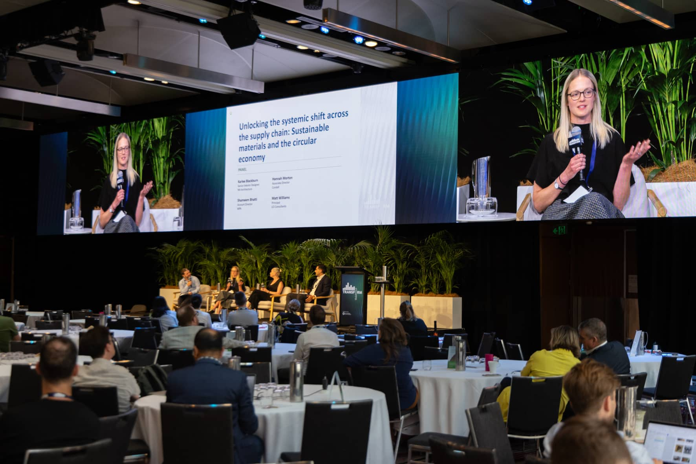

Buying GreenPower for your home
Choose accredited renewable electricity through your energy provider.
Malabar Wastewater Treatment Plant
GreenPower makes it easy to recognise and purchase renewable electricity and gas that meets stringent environmental standards.
Choose accredited renewable electricity through your energy provider.

Choose accredited renewable electricity through your energy provider.

Select the pathway that best describes your industry to become GreenPower accredited


GreenPower
White Whale Coffee Roasters switched to GreenPower to match its electricity use with renewable electricity and keep building on its sustainability work.

GreenPower Renewable Gas Certification
Jemena’s Malabar Biomethane Project is helping build Australia’s renewable gas market by producing biomethane and injecting it into the Sydney gas network.

GreenPower Decoupled
Laing O’Rourke uses GreenPower Decoupled to match electricity use across changing construction sites, offices and warehouses.

Since 1997 — GreenPower renewable energy accreditation
GreenPower renewable energy accreditation
360,000+ — Households and businesses that buy GreenPower
Households and businesses that buy GreenPower

100% GreenPower — Renewable electricity available through retailers
Renewable electricity available through retailers
GreenPower has published Version 11.3 of the National GreenPower Accreditation Program Rules.

GreenPower is the official renewable electricity sponsor for GBCA Transform 2025, the Green Building Council of Australia’s annual flagship conference.
The updated rules set out how renewable gas is certified and audited under the GreenPower program.